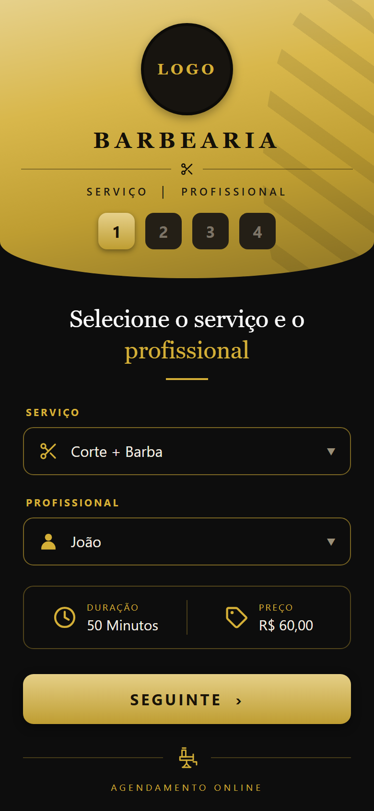
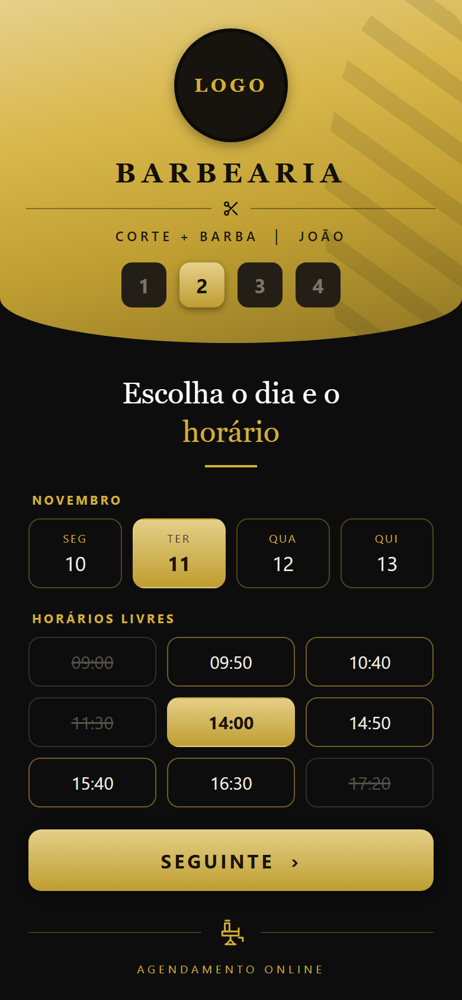
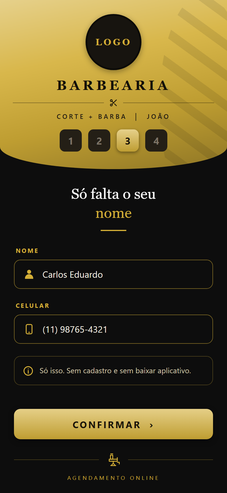
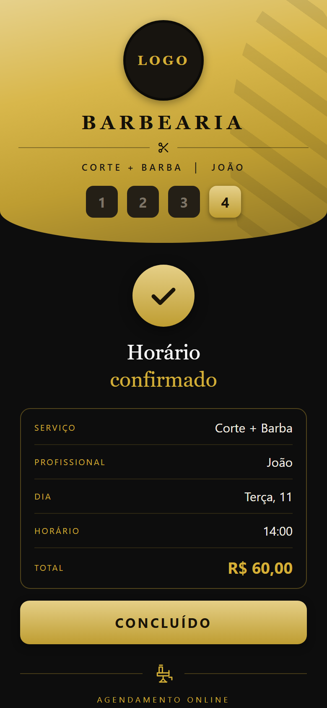
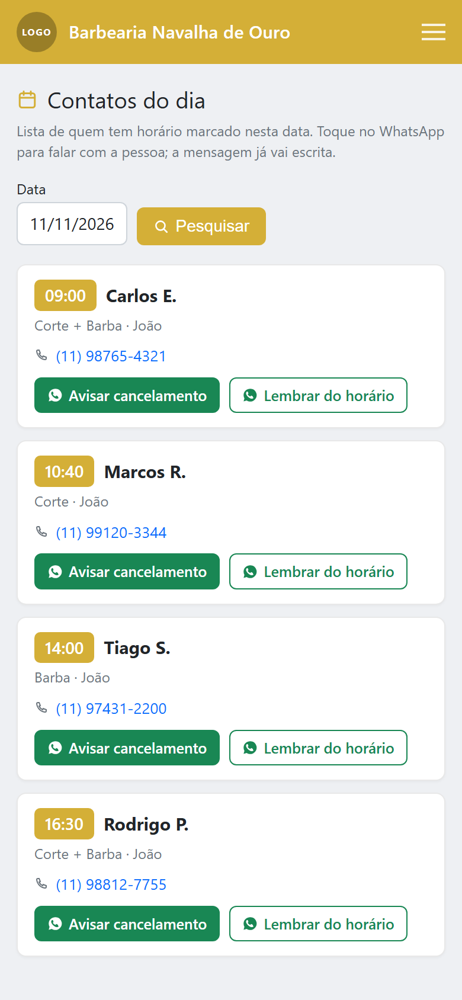
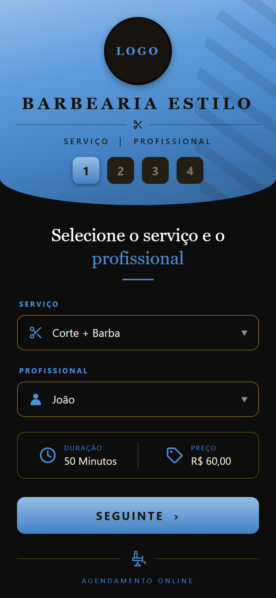
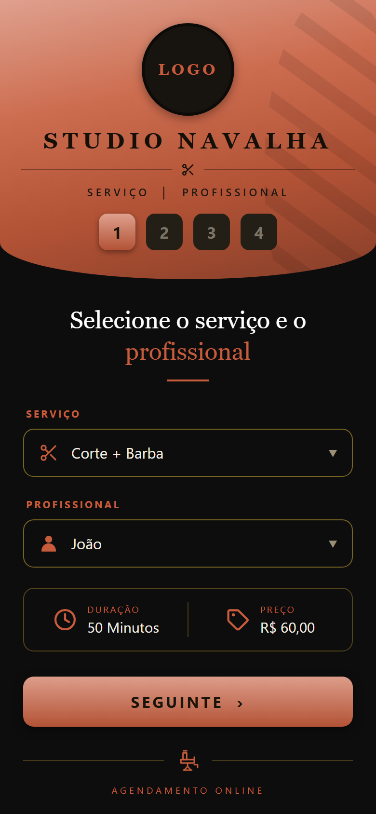

Você manda um link. Ele escolhe o serviço, o barbeiro e o horário livre — e cai direto na sua agenda. Sem app para baixar, sem cadastro, sem você parar o corte para responder “tem horário?”.
14 dias grátis para testar · instalação grátis · sem fidelidade

“Tem horário às 15h?” chega o dia inteiro, e cada resposta é um cliente esperando na cadeira.
Anotação no caderno não avisa quando bate. O app simplesmente não deixa marcar em cima.
Cancelar dá vergonha de ligar. Pelo link ele cancela em dois toques — e o horário volta a ficar livre para outro.
Sem “em breve”. Tudo desta lista está funcionando e você testa antes de pagar.
| A reclamação | O que o app faz |
|---|---|
| “Passo o dia respondendo tem horário?” | Você manda um link e volta para o corte. Ele escolhe sozinho, às 11 da noite se quiser. |
| “Marquei dois no mesmo horário.” | Horário ocupado desaparece da tela. Não existe marcar em cima. |
| “O cara marca e não vem.” | Cancelar pelo link é mais fácil que ligar — e o horário volta a ficar livre. Você ainda toca no horário na agenda e manda a confirmação pronta pelo WhatsApp. |
| “Precisei fechar e tive que avisar um por um.” | Bloqueia o dia e abre Contatos do dia: a lista de quem estava marcado, com o WhatsApp e a mensagem já escrita. |
| “Tenho três barbeiros, cada um com folga diferente.” | Cada um com expediente, almoço, folga e férias próprios. Lançou férias, somem os dias dele — e só dele. |
| “Sistema cobra por barbeiro e fica caro.” | Aqui o preço é da barbearia, não do barbeiro. |
| “Fico no app junto com o concorrente do lado.” | É o seu link, com o seu logo e a sua cor. Ninguém mais aparece nele. |
| “Meu cliente não vai baixar aplicativo.” | Não precisa. Abre no navegador do celular. |
| “Meu cliente nem e-mail tem.” | Pede nome e celular. Só isso. |
| “Digitam o telefone errado e eu não consigo achar a pessoa.” | O campo só aceita celular brasileiro de verdade, com DDD que existe. |
| “Se eu sair do sistema, perco meus clientes.” | Não perde. A lista é sua, está escrito no contrato, e entregamos em planilha quando você pedir. |
Quatro toques, cerca de 30 segundos. Ele nem precisa saber usar nada.



Quem paga o app é você — então esta parte importa mais que a de cima. Tudo aqui você faz do celular, sozinho, sem pedir para a gente.
A tela que resolve o dia em que dá problema é Contatos do dia: você acordou doente, tem quatro clientes marcados e não quer caçar o número de cada um no meio das conversas. Escolhe a data e vê quem está marcado, em ordem de horário, com o serviço, o barbeiro, o telefone e dois botões de WhatsApp por cliente — avisar cancelamento e lembrar do horário, com a mensagem já escrita e o nome da pessoa dentro dela.
Dá para mudar o texto antes de mandar. E é um botão por cliente: não existe disparo em massa aqui, de propósito — envio em rajada é o padrão que faz o WhatsApp bloquear número, e o número é a barbearia.

Dia, semana, mês ou tabela. Cliente pediu para mudar de horário? Você arrasta o agendamento para o lugar novo.
Toca no horário e aparecem confirmar presença e pedir para remarcar. O de remarcar manda o cliente para o link dele, que só oferece horário que está mesmo livre — sem lista colada na mensagem para envelhecer em cinco minutos.
Um registro cobre o período inteiro, e aqueles dias somem da agenda dele na hora. A agenda do outro barbeiro não muda nada.
Compromisso de quinta às 15h não precisa virar dia perdido: fecha aquela janela e o resto do dia continua aberto.
Feriado ou reforma: um período bloqueado vale para todos os barbeiros de uma vez.
Nome, tempo, preço e cor de cada serviço. Você mesmo cadastra e reajusta quando quiser — não passa pela gente.
Quem ligou, mandou mensagem ou apareceu na porta entra pelo painel, no horário que você decidir. O link é um caminho a mais, não o único.
Administrador, barbeiro e recepção têm acessos diferentes. O barbeiro vê os próprios clientes; quem abre tudo é o dono.
Agenda lotada ou barbearia fechada por um tempo: a página sai do ar com um recado no lugar e volta com um clique.
Seu logo, seu nome, sua cor, seus serviços e seus preços. Seu cliente não vê marca de sistema nenhum, e não encontra a barbearia do concorrente do lado da sua, como acontece nos aplicativos de catálogo.


Você não está entrando num sistema fechado onde ninguém te escuta. Se o seu dia a dia pedir algo que o app ainda não faz, quem recebe o pedido é quem escreve o programa.
Do seu jeito, por WhatsApp. Não precisa saber explicar em termo técnico — basta dizer o que te atrapalha hoje.
Quanto custa desenvolver e quanto custa manter no ar. São duas contas diferentes, e você vê as duas.
Com prazo e valor fechados antes de começar. Se não fizer sentido, você diz não e não paga nada por ter perguntado.
E o app não para onde está. Estamos desenvolvendo melhorias e funcionalidades novas o tempo todo — pensando nos dois lados do balcão: em você, que quer gastar menos tempo com agenda, e no seu cliente, que quer marcar sem complicação. Logo, logo tem novidade. O que entrar no app entra também para quem já é assinante.
Cada profissional com o próprio horário, folga e almoço. O cliente escolhe com quem quer cortar.
Lançou as férias de um barbeiro, os dias somem da agenda dele — e só dele. Feriado fecha a barbearia inteira de uma vez.
Precisou fechar hoje? A tela mostra quem está marcado, com o WhatsApp de cada um e a mensagem já escrita para avisar.
O cliente resolve sozinho pelo link dele, sem ligar para você e sem ocupar horário à toa.
Toque no horário na agenda e escolha confirmar presença ou pedir para remarcar. Abre o seu WhatsApp com a mensagem escrita — quem aperta enviar é você.
O campo só aceita celular brasileiro de verdade, com DDD válido. Nada de telefone digitado errado.
Quem já veio fica registrado, com o histórico de horários — sua base, não a de um aplicativo de terceiro.
Os dois planos têm o app inteiro. A diferença é o endereço e o quanto fazemos por você.
Para a barbearia que quer parar de responder “tem horário?” ainda esta semana.
Para quem quer a barbearia com endereço próprio na internet, com a cara da casa.
O app está no ar agora, com uma barbearia de exemplo. Marque um horário como se fosse seu cliente e veja quantos toques leva. Nada para instalar — e nenhum dado seu fica conosco.
Se preferir, fale com a gente no WhatsApp: montamos a tela com o nome e o logo da sua barbearia e mandamos o print antes de você decidir qualquer coisa.
É aqui que vão ficar os depoimentos das três primeiras barbearias que usarem o Horário Cheio no dia a dia — com o nome, a foto e a frase delas. Enquanto isso não existir, o espaço fica vazio: a gente não inventa depoimento nem compra foto de banco de imagens para fingir cliente que não temos.
Reservado para a primeira barbearia.
Reservado para a segunda.
Reservado para a terceira.
Quer uma delas? Teste 14 dias grátis. Se o app te ajudar de verdade, a gente vai te pedir uma frase — e você diz sim ou não com a mesma liberdade.
Não. É um link que abre no navegador do celular dele. Se quiser, ele salva na tela de início e fica com cara de aplicativo.
Marca do mesmo jeito. O formulário pede só o nome e o celular.
Não. Ele escolhe serviço, dia e hora, escreve o nome e o celular e pronto — são quatro toques.
Você bloqueia o dia no painel e a agenda para de oferecer horário na hora. A tela de contatos do dia mostra quem já estava marcado, com o WhatsApp de cada um e a mensagem pronta para avisar.
Não, e isso é de propósito: envio automático em massa é o caminho mais rápido para o WhatsApp bloquear o número da barbearia. Quem aperta enviar é você, e a mensagem já vai escrita.
Não. Cada barbearia tem a própria instalação e o próprio banco de dados.
Sua. Está no contrato: nós operamos o sistema para você e não podemos usar os seus clientes para nada — nem para vender, nem para oferecer outra coisa a eles. Se um dia você sair, entregamos a lista em planilha e apagamos do nosso lado.
Dá. Você conta o que precisa, levantamos quanto custa desenvolver e quanto custa manter no ar, e mandamos um orçamento com prazo e valor. Você só decide depois de ver o número — perguntar não custa nada.
Comece pelo Essencial. Ele tem o app inteiro e não limita barbeiro. O Completo vale quando você quer o endereço próprio — suabarbearia.com.br — em vez de dividir o nosso. Trocar de plano é só avisar, sem multa.
Você mesmo muda pelo painel, em qualquer celular, quantas vezes quiser. Se preferir que a gente mude, é só chamar no WhatsApp.
Um dia. Precisamos do nome dos barbeiros, dos serviços com preço e duração, e do horário de funcionamento.
Sem fidelidade e sem multa. É só avisar.
A diferença maior é a unidade de cobrança: eles cobram por profissional e aqui o preço é da barbearia. Com três barbeiros, isso é R$ 170 por mês de diferença. Montamos uma comparação de preços com fonte e data, incluindo os casos em que a resposta certa não é a gente.
Fale com a gente no WhatsApp e montamos a tela da sua barbearia para você ver antes de decidir.